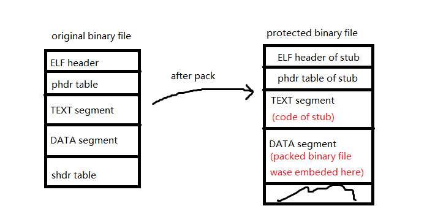

二进制加壳与脱壳
二进制加壳与脱壳
通常恶意软件作者为了避免恶意软件被二进制分析或者逆向研究，会对恶意软件进行加壳保护。
简单来讲，加壳就是将原来的可执行文件进行压缩或者加密，然后放在另一个可执行文件的数据段中，这个新的可执行文件将会在运行时对原来的可执行文件进行解压缩或者解密，这些操作都是在内存中进行的。然后再将其映射到内存中执行，整个过程都不会在磁盘上写入数据，所以也就无法被静态分析。
如下图所示：

虽然无法通过静态的方法分析原来的二进制文件，但是可以使用动态的方法进行分析。
注意到加壳后的可执行文件会先在内存中对原来的二进制文件进行解压或者解密后，再将其映射到内存并将控制权转移到二进制文件原来的入口点(Original Entry Point)。
因此，我们可以在加壳后的可执行文件运行时跟踪其内存读写的操作，进而获取到原来的二进制文件，然后再进一步进行二进制分析。
想要在程序运行时动态跟踪其内存读写操作，需要使用动态二进制插桩(Dynamic Binary Instrumentation, DBI)技术。
如何使用Pin
整个文档将会介绍使用动态二进制插桩平台(DBI Platform) Pin进行一个自动脱壳的实验。
Pin工具文档：Pin: Pin 3.25 User Guide
如果想要了解更多关于二进制插桩的内容，可以参考博客
这篇博客介绍了DynamoRIO的使用方法，DynamoRIO和Pin一样是动态二进制插桩平台，它们的原理基本都是一样的，只是实现细节和优化方法存在差异。
和DynamoRIO一样，用户在定义DBI工具(client in DynamoRIO, pintools in Pin)时主要定义两部分代码：
- 插桩代码：决定在什么地方插入什么代码
- 分析代码：在插入点执行的代码
Pin支持多种细粒度的二进制插桩：
-
指令插桩：一次仅对二进制文件的一条指令进行检查并插桩，使用"INS_AddInstrumentFunction()"进行注册
-
基本块插桩：对一个基本块进行插桩，也就是为一次对一个基本块调用一次分析函数，使用"TRACE_AddInstrumentFunction()"进行注册。
Pin中并不能直接对基本块进行插桩，如果要对基本块插桩，就需要使用Trace插桩粒度，然后遍历Trace中的基本块进行分析和插桩
-
函数插桩：当可执行文件首次加载函数时，能够在DBI工具中检查并插桩整个函数的指令，使用"RTN_AddInstrumentFunction()"进行注册
-
IMAGE插桩：DBI工具在一个整个镜像(Image, an entire executable or library)首次被加载到内存时，对其进行检查并插桩，使用"IMG_AddInstrumentFunction()"进行注册
下面将使用一个简单的例子介绍如何使用Pin搭建DBI工具。
这个例子是官方文档中的例子，对一个程序所执行的指令进行计数。